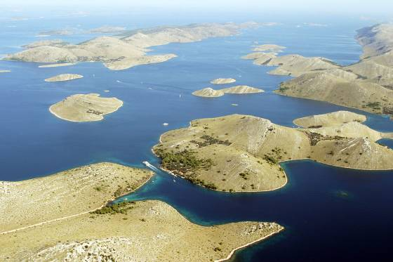

The total area of the park is about 220 km2 and consists of 89 islands, islets and cliffs. Only 1/4 of the are is land, the rest is sea ecosystem. The most popular phenomenon of this park are vertical cliffs "of the Kornati islands, facing the sea side. Over the last few years, the Kornati have become a place where you will see some of the most beautiful yachts and sailboats ever sailing on the Adriatic. During the summer months, the crowd on Kornati island are huge, but there you can still find a bond or a place to anchor. There are several coves in the whole archipelago with a predominantly modest but excellent catering offer. Let`s dont be shy, the best gastro offer. A standard tourist excursion departs at 9:00 am and returns at 6:00 pm in the afternoon. Trips usually consist of driving to Kornati, passing through Kornati archipelago, and lunch breaks with another or two pauses for swimming and sightseeing. Depending on the organizer, prices vary from 200 to 300 kuna per person.
History of Kornati National Park
- 1965. First written proposal for the establishment of Kornati National Park (Sven Kulušić: "Kornati Island Group", Geography Herald, 27, 215-245, Zagreb, 1965): "... Kornati island group will present a priceless national treasure in modern tourism only under condition that it remains as it was a few years ago: a beautiful, untouched and unspoiled image of the past, a monument to the human labour and a witness of a difficult life struggle. Whether it's attainable, it's the question that can only be answered by the community, not excluding the possibility of establishing a national park..."
- 1967. The Executive Council of the Parliament of SR Croatia announces the passage of the Decision to Proclaim the Kornati Islands (all four island chains) and the southeast part of Long Island with the Telašćica Bay for a natural area reservation as described in the Nature Conservation Act, articles 20 and 22 (Decision Nr. 3178/2-238-1967, 30. June 1967., "Narodne Novine" 31/67). With that decision, Kornati received one of the lowest forms of protection, one that didn't provide for the reservation's own management.
1976. A study created as a proposal for a discussion of the new Spatial Plan for the areas with special purposes. That is, a proposal to create a national park of the Kornati Islands and the southeast part of Long Island. 1980. The Parliament of SR Croatia enacted Kornati National Park Act ("Narodne novine" 31/80) which came into force on August 13, 1980. Kornati National Park included the so-called Lower Kornati (Kornat Island and Piškera island chains) as well as the southeast part of Long Island with the Telašćica Bay. 1981. Management for a part of Kornati National Park founded in Šibenik. 1982. Management for a part of Kornati National Park founded in Zadar. 1983. County councils of Šibenik and Zadar signed the Agreement on common promotion, conservation and protection of Kornati National Park. 1985. In April, after the county councils in Šibenik and Zadar couldn't agree on the management of Kornati National Park, the council of County Group in Split passed the Decision to establish pre-incorporated Work Organization Kornati National Park (("Službeni glasnik Zajednice općina Split" 3/85) which was then registered at the County Court in Split in September. 1986. In May, a court finally dissolves the two managements of parts of the national park. 1986. In July, Ordinance on Order in Kornati National Park published. ("Službeni vjesnik općina Drniš, Knin i Šibenik" 20/86) 1988. Because of divergent approaches to the park management by the two counties covering parts of the park, Act on Changing the Kornati National Park Act was enacted in April ("Narodne novine" 14/88). The northwest part of the existing Kornati National Park was marked off and established as Telašćica Nature Park, while the bigger part of the national park in the area covered by Šibenik County retained the status and the name of Kornati National Park (223.75 km2 with 91 islands, islets and reefs). 1990. The Decision to Establish Spatial Plan of Kornati National Park ("Narodne novine" 2/90) enacted in the Parliament of SR Croatia at the session of the Council of Counties (27. 12. 1989), and then at the session of the Council of Workers (11. 01. 1990). 1994. Croatian Parliament enacted Nature Conservation Act. ("Narodne novine" 30/94 and 72/94) 1996. Ordinance on Order in Kornati National Part brought into force. ("Narodne novine" 38/96) 1997. Act on the Changes to the Kornati National Park Act enacted ("Narodne novine" 13/97). The boundaries of the Park were changed so the Park subsequently covered 217 km2 with 89 islands, islets and reefs. 2003. Croatian Parliament brought into force a new Spatial Plan for the Kornati NP (Narodne novine 118/03) 2003. Croatian Parliament enacted a new Nature Conservation Act. ("N.N." 162/03) 2005. Croatian Parliament enacted a new Nature Conservation Act. ("N.N." 70/05). 2008. Croatian Parliament enacted Changes and Amendments to the Nature Conservation Act. ("N.N." 139/08). 2010. A new Ordinance on Order in Kornati National Park enacted and was put into effect on January 1, 2011. ("N.N." 141/10) 2011. Changes and Amendments to the Ordinance on Order in Kornati National Park enacted. ("N.N" 53/11) 2011. Croatian Parliament enacted Changes and Amendments to the Nature Conservation Act. ("N.N." 57/11)